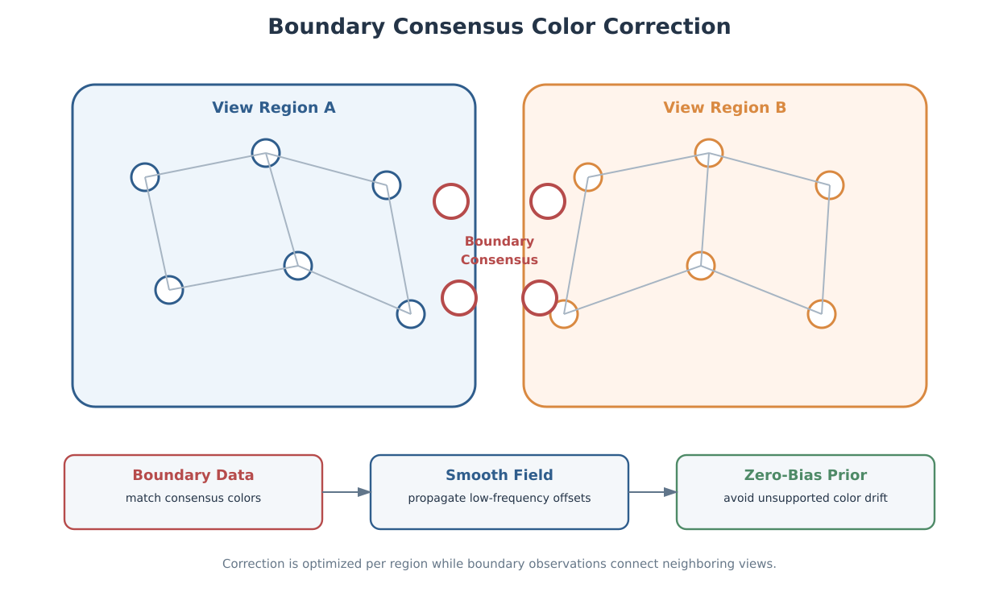

Direct multi-view colorization for large sparse point clouds.
Large-Scene Point Cloud Colorization
A scalable offline pipeline that assigns stable image colors to large LiDAR point clouds by combining block-based voxel visibility, coherent main-view selection, boundary color consensus, and semi-global correction-field optimization.
Background
Large mobile-mapping scenes often combine LiDAR and image sensors with different sampling rates, timestamps, fields of view, and occlusion patterns. A point scanned by the laser is not necessarily visible in the nearest image, and image-to-image exposure or white-balance differences can create obvious color seams when neighboring points switch source views.
Mesh texturing can solve some appearance problems through surface parameterization, but sparse or very large point clouds need a direct point-to-image strategy that remains memory-bounded and avoids blurring edges through naive multi-view averaging.
Approach
- Split the scene into spatial blocks, then load neighboring blocks as occlusion context while keeping output restricted to the target block.
- Build a sparse voxel hierarchy for visibility testing so ray checks can reject occluded views without rendering full per-image depth maps for every point.
- Keep only Top-K visible candidate views per voxel, then run point-level projection, mask, normal, semantic, and coarse-depth checks before sampling image colors.
- Select each point's main view with a distance-dominant geometric cost, using local label voting to suppress isolated view switches and form coherent view regions.
- Estimate multi-view color consensus near region boundaries, then solve a sparse correction field inside each region so seams are reduced while single-view texture detail is preserved.
My Contribution
I designed the method as a large-scene direct point-cloud colorization system rather than a mesh texturing or timestamp-nearest-image workflow. The core idea is to make geometric visibility reliable first, then use the spatial continuity of the view-selection cost to reduce the global color problem into boundary-coupled regional optimizations.
My main contributions included:
- Block-based processing model with cross-block occlusion context for large scenes
- Voxel-level visibility acceleration and finite candidate-view storage
- Point-level projection validation, including row-pose projection for motion capture
- Distance-driven main-view selection with local view-region regularization
- Boundary multi-view sampling for estimating shared color targets between regions
- Sparse per-region correction-field optimization using boundary data terms and spatial smoothness
Outcome
The resulting pipeline forms a complete information path from visibility-aware image selection to color-consistent point-cloud output. It is designed for bounded-memory processing of large sparse scenes, while avoiding the common failure modes of nearest-timestamp coloring, full multi-view averaging, and fully global color optimization.
The project has been completed as an engineering pipeline, with the core visibility, view-selection, direct color sampling, and semi-global color harmonization modules implemented for large-scene point-cloud production workflows.

